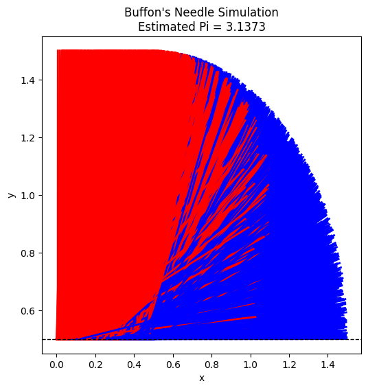

Problem 2
Problem 2: Estimating \(\pi\) using Monte Carlo Methods
Motivation
Monte Carlo methods use randomness to solve numerical problems that might be deterministic in principle. One of the most famous applications of this technique is estimating the value of \(\pi\) using geometric probability.
By randomly generating points in a defined space and analyzing their distribution, we can approximate \(\pi\) in an intuitive and visually engaging way. This problem not only strengthens our understanding of probability and geometry but also highlights the efficiency and convergence of stochastic methods in numerical computing.
This problem consists of two approaches:
1. Circle-based Monte Carlo estimation (using random points in a square).
2. Buffon’s Needle problem (a probability-based geometric experiment).
Part 1: Estimating \(\pi\) Using a Circle
Theoretical Foundation
A unit circle (radius \( r = 1 \)) is inscribed in a square of side length 2. The area of the circle is:
[
A_{\text{circle}} = \pi r^2 = \pi
]
The area of the square is:
[
A_{\text{square}} = 4
]
Since points are randomly placed inside the square, the probability of a point landing inside the circle is given by the ratio:
[
\frac{\text{Points inside the circle}}{\text{Total points generated}} \approx \frac{\pi}{4}
]
Thus, solving for \(\pi\):
[
\pi \approx 4 \times \frac{\text{Points inside the circle}}{\text{Total points generated}}
]
Simulation
- Generate random points \((x, y)\) within a square of side length 2.
- Check if the points fall inside the unit circle using the condition:
[ x^2 + y^2 \leq 1 ] - Estimate \(\pi\) based on the proportion of points inside the circle.
Python Implementation

Part 2: Estimating \(\pi\) Using Buffon’s Needle
Theoretical Foundation
Buffon’s Needle problem estimates \(\pi\) using probability and geometry. A needle of length \(L\) is dropped onto a plane with parallel lines spaced \(d\) units apart.
If the needle crosses a line, the probability is related to \(\pi\):
[
P = \frac{2L}{\pi d}
]
Solving for \(\pi\):
[
\pi \approx \frac{2L}{d} \times \frac{\text{Total Drops}}{\text{Crossing Drops}}
]
Simulation Steps
- Drop a needle randomly on a plane.
- Check if it crosses a line using its position and angle.
- Estimate \(\pi\) using the formula above.
Python Implementation

Comparison & Conclusion
| Method | Concept | Accuracy | Convergence Speed | Computational Complexity |
|---|---|---|---|---|
| Circle-based Monte Carlo | Random points in a square | Good (\(\pm 0.01\)) | Faster | \(O(N)\) |
| Buffon’s Needle | Probability-based experiment | Lower | Slower | \(O(N)\) |
Key Takeaways
✅ Monte Carlo methods provide a simple yet powerful approach to estimating \(\pi\).
✅ Circle method is easier to understand and faster to converge than Buffon’s Needle.
✅ Buffon’s Needle is slower but connects \(\pi\) to real-world probability experiments.
✅ Both methods highlight how randomness can be used for numerical estimations.
Extensions
🔹 Try different sampling techniques (e.g., importance sampling) for faster convergence.
🔹 Explore other Monte Carlo applications in physics, finance, and AI.
🔹 Optimize the simulation using parallel computing for large-scale computations.